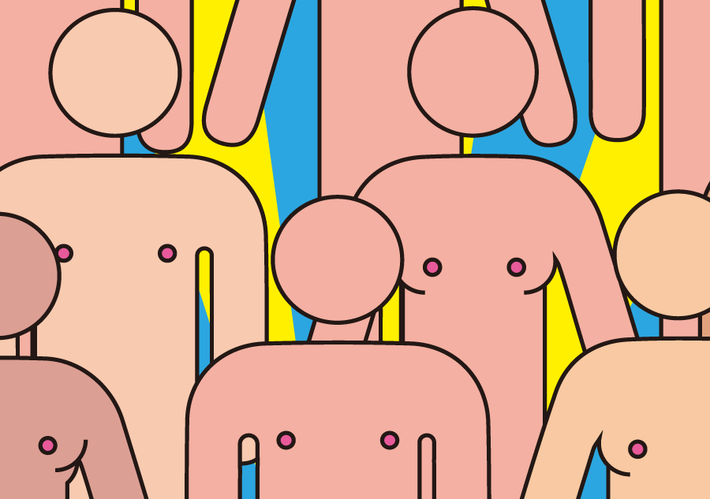
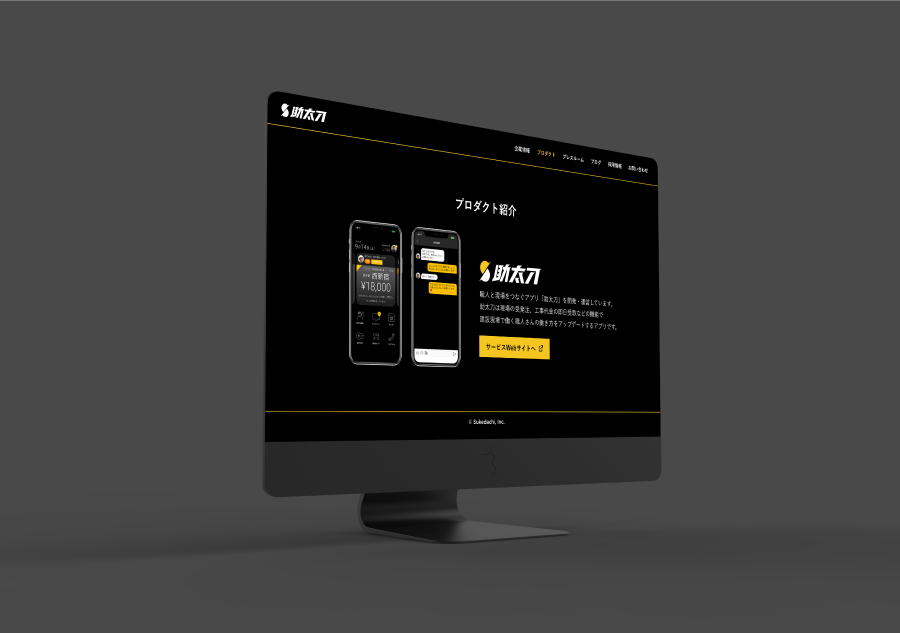
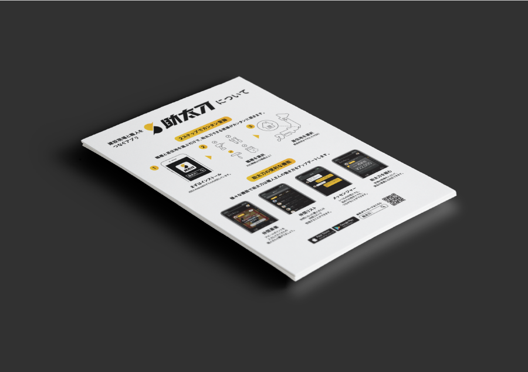
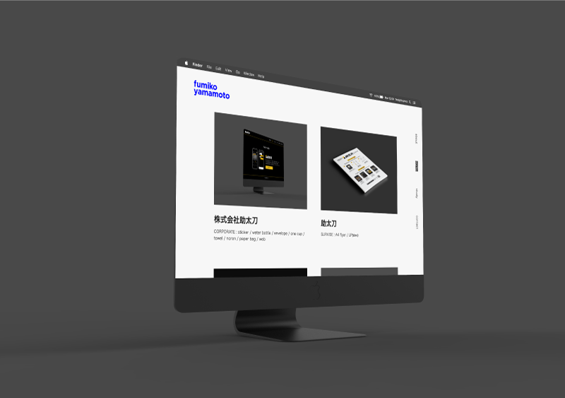

まるはだかミュージアム
アイデア / AWARDS:博報堂サマーインターン最終課題準優勝
YUBISASHI
アイデア / AWARDS:博報堂 BRAND DESIGN CONTEST "BRANCO!" 東急電鉄部門優勝

株式会社助太刀
CORPORATE : sticker / water bottle / envelope / one cup / towel / noren / paper bag / web

助太刀
SURVISE : A4 flyer / LP(dev) × 2
PATRA inc
logo / UI / foodie

MEDERU beaute
Package / Web

Portfolio
web design / coding